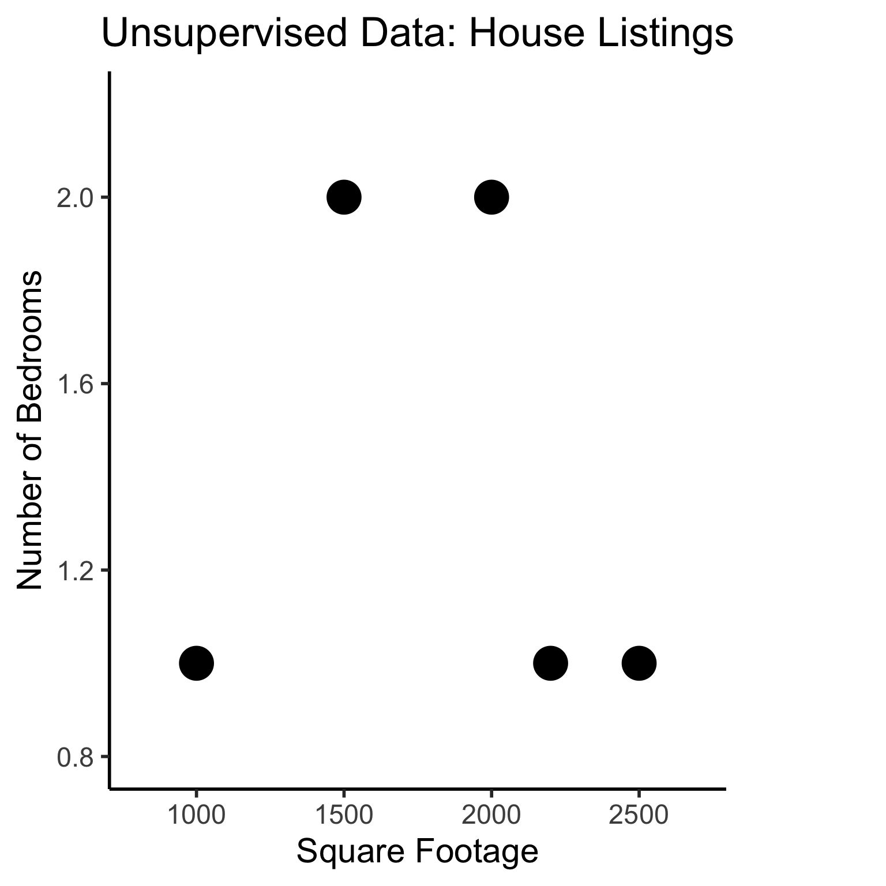

source("../_globals.r")Week 7: Supervised Learning
DSAN 5000: Data Science and Analytics
Section 02
Class Sessions
Schedule
cb_palette = ["#E69F00", "#56B4E9", "#009E73", "#F0E442", "#0072B2", "#D55E00", "#CC79A7"]
from IPython.display import Markdown
def disp(df, floatfmt='g', include_index=True):
return Markdown(
df.to_markdown(
floatfmt=floatfmt,
index=include_index
)
)
def summary_to_df(summary_obj, corner_col = ''):
reg_df = pd.DataFrame(summary_obj.tables[1].data)
reg_df.columns = reg_df.iloc[0]
reg_df = reg_df.iloc[1:].copy()
# Save index col
index_col = reg_df['']
# Drop for now, so it's all numeric
reg_df.drop(columns=[''], inplace=True)
reg_df = reg_df.apply(pd.to_numeric)
my_round = lambda x: round(x, 2)
reg_df = reg_df.apply(my_round)
numeric_cols = reg_df.columns
# Add index col back in
reg_df.insert(loc=0, column=corner_col, value=index_col)
# Sigh. Have to escape | characters?
reg_df.columns = [c.replace("|","\|") for c in reg_df.columns]
return reg_df\[ \DeclareMathOperator*{\argmax}{argmax} \DeclareMathOperator*{\argmin}{argmin} \newcommand{\bigexpect}[1]{\mathbb{E}\mkern-4mu \left[ #1 \right]} \newcommand{\definedas}{\overset{\text{defn}}{=}} \newcommand{\definedalign}{\overset{\phantom{\text{defn}}}{=}} \newcommand{\eqeventual}{\overset{\text{eventually}}{=}} \newcommand{\expect}[1]{\mathbb{E}[#1]} \newcommand{\expectsq}[1]{\mathbb{E}^2[#1]} \newcommand{\fw}[1]{\texttt{#1}} \newcommand{\given}{\mid} \newcommand{\green}[1]{\color{green}{#1}} \newcommand{\heads}{\outcome{heads}} \newcommand{\iqr}{\text{IQR}} \newcommand{\kl}{\text{KL}} \newcommand{\lik}{\mathcal{L}} \newcommand{\mle}{\textsf{ML}} \newcommand{\orange}[1]{\color{orange}{#1}} \newcommand{\outcome}[1]{\textsf{#1}} \newcommand{\param}[1]{{\color{purple} #1}} \newcommand{\pgsamplespace}{\{\green{1},\green{2},\green{3},\purp{4},\purp{5},\purp{6}\}} \newcommand{\prob}[1]{P\left( #1 \right)} \newcommand{\purp}[1]{\color{purple}{#1}} \newcommand{\red}[1]{\color{red}#1} \newcommand{\spacecap}{\; \cap \;} \newcommand{\spacewedge}{\; \wedge \;} \newcommand{\tails}{\outcome{tails}} \newcommand{\Var}[1]{\text{Var}[#1]} \newcommand{\bigVar}[1]{\text{Var}\mkern-4mu \left[ #1 \right]} \]
Today’s Planned Schedule (Section 02):
| Start | End | Topic | Recording | |
|---|---|---|---|---|
| Lecture | 12:30pm | 12:45pm | Week 06 Recap → | |
| 12:45pm | 1:05pm | Quiz 3.2 | ||
| 1:05pm | 1:20pm | Intro to Supervised Learning → | ||
| 1:20pm | 1:35pm | K-Nearest Neighbors (KNN) → | ||
| 1:35pm | 1:50pm | Naïve Bayes Classifiers → | ||
| Break! | 1:50pm | 2:00pm | ||
| Lab | 2:00pm | 2:40pm | Lab: Feature Selection → | |
| 2:40pm | 3:00pm | Student Presentation |
Week 06 Recap
- Normalization
- Correlation and Covariance
- Distance Metrics
Normalization
- Recall from last week’s slides:
- IQR Rule (Tukey), suitable for general data
- Three-Sigma Rule, suitable for Normally-distributed data
- In either case: when we remove outliers using one of these methods, in the context of machine learning we call this feature clipping
One More: Log-Scaling
In math (I wish I had learned it like this), the \(\log()\) function is a magic function that “reduces” complicated operations to less-complicated operations:
Exponentiation \(\rightarrow\) Multiplication:
\[ \log(a^b) = b\cdot \log(a) \]
Multiplication \(\rightarrow\) Addition:
\[ \log(a\cdot b) = \log(a) + \log(b) \]
Why Does This Help Us?
- Tl;dr Humans have superpowers for identifying linear relationships: \(y = mx + b\)
- \(\implies\) if we can use \(\log()\), we also get superpowers for identifying exponential relationships for free, since
\[ y = e^{mx + b} \iff \log(y) = mx + b \]
- If we see \(mx + b\) in a log-scale plot, we can immediately infer the functional relationship!
In Pictures
library(tidyverse)── Attaching core tidyverse packages ──────────────────────── tidyverse 2.0.0 ──
✔ dplyr 1.1.2 ✔ readr 2.1.4
✔ forcats 1.0.0 ✔ stringr 1.5.0
✔ lubridate 1.9.2 ✔ tibble 3.2.1
✔ purrr 1.0.2 ✔ tidyr 1.3.0
── Conflicts ────────────────────────────────────────── tidyverse_conflicts() ──
✖ dplyr::filter() masks stats::filter()
✖ dplyr::lag() masks stats::lag()
ℹ Use the conflicted package (<http://conflicted.r-lib.org/>) to force all conflicts to become errorsN <- 50
x_min <- 1
x_max <- 5
x_vals <- runif(N, x_min, x_max)
noise_vals <- rnorm(N, 0, exp(5))
my_exp <- function(x) exp(3*x + 1)
y_exp <- my_exp(x_vals) + noise_vals
exp_df <- tibble(x=x_vals, y=y_exp)
ggplot(exp_df) +
stat_function(data=data.frame(x=c(x_min,x_max)), fun = my_exp, linewidth = g_linewidth, linetype="dashed") +
geom_point(aes(x=x, y=y), size = g_pointsize / 2) +
dsan_theme("half") +
labs(
title="y = exp(3x + 1), Linear Scale"
)
# Log2 scaling of the y axis (with visually-equal spacing)
library(scales)
Attaching package: 'scales'The following object is masked from 'package:purrr':
discardThe following object is masked from 'package:readr':
col_factorggplot(exp_df) +
stat_function(data=data.frame(x=c(x_min,x_max)), fun = my_exp, linewidth = g_linewidth, linetype="dashed") +
geom_point(aes(x=x, y=y), size = g_pointsize / 2) +
dsan_theme("half") +
scale_y_continuous(trans = log_trans(),
breaks = log_breaks()) +
labs(
title="y = exp(3x + 1), Log Scale"
)Warning in self$trans$transform(x): NaNs producedWarning: Transformation introduced infinite values in continuous y-axisWarning: Removed 2 rows containing missing values (`geom_point()`).
\[ y = e^{mx + b} \iff \log(y) = mx + b \]
Covariance: Intuition 1.0
- If we are at the mean \((\mu_x,\mu_y)\), what is likelihood points to the right are also above?
- Similarly,what is the likelihood that points to the left are also below?
library(tidyverse)
library(latex2exp)
gen_y_noisy <- function(x_val, eps) {
lower <- max(-1, x_val - eps)
upper <- min(1, x_val + eps)
y_noisy <- runif(1, lower, upper)
return(y_noisy)
}
N <- 100
x_vals <- runif(N, -1, 1)
x_mean <- mean(x_vals)
y_collinear <- x_vals
y_coll_mean <- mean(y_collinear, drop.na = TRUE)
df_collinear <- tibble(x=x_vals, y=y_collinear, rel="collinear")
# Force the points to be inside [-1,1]
y_noisy <- x_vals
for (i in 1:length(y_noisy)) {
cur_x_val <- x_vals[i]
y_noisy[i] <- gen_y_noisy(cur_x_val, 0.75)
}
y_noisy_mean <- mean(y_noisy, na.rm = TRUE)
#print(y_noisy_mean)
df_noisy <- tibble(x = x_vals, y = y_noisy, rel="noise")
# Label vals above and below mean
label_df <- tribble(
~x, ~y, ~label,
0.5, 0.5, "+",
-0.5, -0.5, "+",
0.5, -0.5, "\u2212",
-0.5, 0.5, "\u2212"
)
gen_cov_plot <- function(df) {
x_mean = mean(df$x)
y_mean = mean(df$y)
ggplot(df, aes(x=x, y=y)) +
geom_point() +
geom_vline(xintercept = x_mean) +
geom_hline(yintercept = y_mean) +
#facet_grid(. ~ rel) +
geom_label(
data=label_df,
aes(x=x, y=y, label=label, color=label),
alpha=0.75,
size = g_pointsize * 1.5
) +
scale_color_manual(values=c("darkgreen","red")) +
dsan_theme() +
remove_legend() +
theme(
#axis.text.x = element_blank(),
axis.title.x = element_blank(),
#axis.ticks.x = element_blank(),
#axis.text.y = element_blank(),
#axis.ticks.y = element_blank(),
axis.title.y = element_blank()
) +
xlim(c(-1,1)) + ylim(c(-1,1)) +
coord_fixed(ratio=1) +
scale_x_continuous(breaks=c(-1, x_mean, 1), labels=c("-1",TeX(r"($\mu_x$)"),"1")) +
scale_y_continuous(breaks=c(-1, y_mean, 1), labels=c("-1",TeX(r"($\mu_y$)"),"1"))
}
gen_cov_table <- function(df, print_matches = FALSE) {
x_mean <- mean(df$x, na.rm = TRUE)
y_mean <- mean(df$y, na.rm = TRUE)
df <- df |> mutate(
x_contrib = ifelse(x > x_mean, "+", "-"),
y_contrib = ifelse(y > y_mean, "+", "-"),
match = x_contrib == y_contrib
)
contrib_crosstab <- table(df$y_contrib, df$x_contrib)
colnames(contrib_crosstab) <- c("x-", "x+")
rownames(contrib_crosstab) <- c("y-", "y+")
if (!print_matches) {
print(contrib_crosstab)
} else {
# Num matches
num_matches <- sum(df$match)
num_mismatch <- nrow(df) - num_matches
writeLines(paste0(num_matches, " matches, ",num_mismatch," mismatches"))
writeLines("\nCovariance:")
writeLines(paste0(cov(df$x, df$y)))
}
}
gen_cov_plot(df_collinear)Scale for x is already present.
Adding another scale for x, which will replace the existing scale.
Scale for y is already present.
Adding another scale for y, which will replace the existing scale.
x- x+
y- 52 0
y+ 0 48100 matches, 0 mismatches
Covariance:
0.362863392533641gen_cov_plot(df_noisy)Scale for x is already present.
Adding another scale for x, which will replace the existing scale.
Scale for y is already present.
Adding another scale for y, which will replace the existing scale.
x- x+
y- 47 7
y+ 5 4188 matches, 12 mismatches
Covariance:
0.245448747040713y_noisy_neg <- x_vals
for (i in 1:length(y_noisy_neg)) {
cur_x_val <- x_vals[i]
y_noisy_neg[i] <- -gen_y_noisy(cur_x_val, 0.75)
}
y_noisy_neg_mean <- mean(y_noisy_neg, na.rm = TRUE)
#print(y_noisy_mean)
df_noisy_neg <- tibble(x = x_vals, y = y_noisy_neg, rel="noise")
gen_cov_plot(df_noisy_neg)Scale for x is already present.
Adding another scale for x, which will replace the existing scale.
Scale for y is already present.
Adding another scale for y, which will replace the existing scale.
x- x+
y- 12 37
y+ 40 1123 matches, 77 mismatches
Covariance:
-0.223037477183319Covariance: Intuition 2.0
- Now, rather than just is this point above-right? (binary), let’s compute how above-right it is!:
gen_rect_plot <- function(df, col_order=c("red","darkgreen")) {
x_mean = mean(df$x)
y_mean = mean(df$y)
df <- df |> mutate(
x_contrib = ifelse(x > x_mean, "+", "-"),
y_contrib = ifelse(y > y_mean, "+", "-"),
match = x_contrib == y_contrib
)
ggplot(df, aes(x=x, y=y)) +
geom_point() +
geom_vline(xintercept = x_mean) +
geom_hline(yintercept = y_mean) +
#facet_grid(. ~ rel) +
geom_rect(aes(xmin=x_mean, xmax=x, ymin=y_mean, ymax=y, fill=match), color='black', linewidth=0.1, alpha=0.075) +
scale_color_manual(values=c("darkgreen","red")) +
scale_fill_manual(values=col_order) +
geom_label(
data=label_df,
aes(x=x, y=y, label=label, color=label),
alpha=0.75,
size = g_pointsize * 1.5
) +
dsan_theme() +
remove_legend() +
theme(
#axis.text.x = element_blank(),
axis.title.x = element_blank(),
#axis.ticks.x = element_blank(),
#axis.text.y = element_blank(),
#axis.ticks.y = element_blank(),
axis.title.y = element_blank()
) +
xlim(c(-1,1)) + ylim(c(-1,1)) +
coord_fixed(ratio=1) +
scale_x_continuous(breaks=c(-1, x_mean, 1), labels=c("-1",TeX(r"($\mu_x$)"),"1")) +
scale_y_continuous(breaks=c(-1, y_mean, 1), labels=c("-1",TeX(r"($\mu_y$)"),"1"))
}
gen_rect_plot(df_collinear, col_order=c("darkgreen","red"))Scale for x is already present.
Adding another scale for x, which will replace the existing scale.
Scale for y is already present.
Adding another scale for y, which will replace the existing scale.
x- x+
y- 52 0
y+ 0 48100 matches, 0 mismatches
Covariance:
0.362863392533641gen_rect_plot(df_noisy)Scale for x is already present.
Adding another scale for x, which will replace the existing scale.
Scale for y is already present.
Adding another scale for y, which will replace the existing scale.
x- x+
y- 47 7
y+ 5 4188 matches, 12 mismatches
Covariance:
0.245448747040713gen_rect_plot(df_noisy_neg)Scale for x is already present.
Adding another scale for x, which will replace the existing scale.
Scale for y is already present.
Adding another scale for y, which will replace the existing scale.
x- x+
y- 12 37
y+ 40 1123 matches, 77 mismatches
Covariance:
-0.223037477183319Covariance: Intuition 3.0
- This means that if we break out of \([-1,1]\), covariance will grow even larger:
# Label vals above and below mean
N <- 100
x_min_expanded <- -5
x_max_expanded <- 15
gen_y_noisy_expanded <- function(x_val, x_min, x_max, eps) {
lower <- max(x_min, x_val - eps)
upper <- min(x_max, x_val + eps)
y_noisy <- runif(1, lower, upper)
return(y_noisy)
}
x_vals_expanded <- runif(N, x_min_expanded, x_max_expanded)
x_mean_expanded <- mean(x_vals_expanded)
y_collinear_expanded <- x_vals_expanded
y_mean_collinear_expanded <- mean(y_collinear_expanded)
df_collinear_expanded <- tibble(x=x_vals_expanded, y=y_collinear_expanded, rel="collinear")
gen_rect_plot_expanded <- function(df, col_order=c("red","darkgreen")) {
x_mean <- mean(df$x)
x_mean_str <- sprintf("%.2f", x_mean)
x_mean_tex <- paste0("($\\mu_x = ",x_mean_str,"$)")
y_mean = mean(df$y)
y_mean_str <- sprintf("%.2f", y_mean)
y_mean_tex <- paste0("($\\mu_y = ",y_mean_str,"$)")
label_df_expanded <- tribble(
~x, ~y, ~label,
# Upper right
(x_mean + x_max_expanded) / 2, (y_mean + x_max_expanded) / 2, "+",
(x_min_expanded + x_mean) / 2, (x_min_expanded + y_mean) / 2, "+",
(x_mean + x_max_expanded) / 2, (x_min_expanded + y_mean) / 2, "\u2212",
(x_min_expanded + x_mean) / 2, (y_mean + x_max_expanded) / 2, "\u2212"
)
df <- df |> mutate(
x_contrib = ifelse(x > x_mean, "+", "-"),
y_contrib = ifelse(y > y_mean, "+", "-"),
match = x_contrib == y_contrib
)
ggplot(df, aes(x=x, y=y)) +
geom_point() +
geom_vline(xintercept = x_mean) +
geom_hline(yintercept = y_mean) +
#facet_grid(. ~ rel) +
geom_rect(aes(xmin=x_mean, xmax=x, ymin=y_mean, ymax=y, fill=match), color='black', linewidth=0.1, alpha=0.075) +
scale_color_manual(values=c("darkgreen","red")) +
scale_fill_manual(values=col_order) +
geom_label(
data=label_df_expanded,
aes(x=x, y=y, label=label, color=label),
alpha=0.75,
size = g_pointsize * 1.5
) +
dsan_theme() +
remove_legend() +
theme(
#axis.text.x = element_blank(),
axis.title.x = element_blank(),
#axis.ticks.x = element_blank(),
#axis.text.y = element_blank(),
#axis.ticks.y = element_blank(),
axis.title.y = element_blank()
) +
coord_fixed(ratio=1) +
xlim(c(x_min_expanded,x_max_expanded)) +
ylim(c(x_min_expanded,x_max_expanded)) +
scale_x_continuous(breaks=c(x_min_expanded, x_mean, x_max_expanded), labels=c("-5",TeX(x_mean_tex),"15")) +
scale_y_continuous(breaks=c(x_min_expanded, y_mean, x_max_expanded), labels=c("-5",TeX(y_mean_tex),"15"))
}
gen_rect_plot_expanded(df_collinear_expanded, col_order=c("darkgreen","red"))Scale for x is already present.
Adding another scale for x, which will replace the existing scale.
Scale for y is already present.
Adding another scale for y, which will replace the existing scale.
x- x+
y- 52 0
y+ 0 48100 matches, 0 mismatches
Covariance:
29.7997084176711# Force the points to be inside [-1,1]
y_noisy_expanded <- x_vals_expanded
for (i in 1:length(y_noisy_expanded)) {
cur_x_val_expanded <- x_vals_expanded[i]
y_noisy_expanded[i] <- gen_y_noisy_expanded(cur_x_val_expanded, x_min_expanded, x_max_expanded, 5)
}
y_noisy_expanded_mean <- mean(y_noisy_expanded, na.rm = TRUE)
#print(y_noisy_mean)
df_noisy_expanded <- tibble(x = x_vals_expanded, y = y_noisy_expanded, rel="noise")
gen_rect_plot_expanded(df_noisy_expanded)Scale for x is already present.
Adding another scale for x, which will replace the existing scale.
Scale for y is already present.
Adding another scale for y, which will replace the existing scale.
x- x+
y- 44 5
y+ 8 4387 matches, 13 mismatches
Covariance:
23.927335626913gen_y_noisy_neg <- function(x_val, x_min, x_max, eps) {
lower <- max(x_min, x_val - eps)
upper <- min(x_max, x_val + eps)
y_noisy <- runif(1, lower, upper)
return(y_noisy)
}
y_noisy_neg_expanded <- x_vals_expanded
for (i in 1:length(y_noisy_neg_expanded)) {
cur_x_val_expanded <- x_vals_expanded[i]
#y_noisy_neg_expanded[i] <- x_mean_expanded - (gen_y_noisy_expanded(cur_x_val_expanded, x_min_expanded, x_max_expanded, 5) - x_mean_expanded)
y_noisy_neg_expanded[i] <- 10 - gen_y_noisy_expanded(cur_x_val_expanded, x_min_expanded, x_max_expanded, 5)
#y_noisy_neg_expanded[i] <- x_mean_expanded - (y_noisy_neg_expanded[i] - x_mean_expanded)
}
y_noisy_neg_expanded_mean <- mean(y_noisy_neg_expanded, na.rm = TRUE)
#print(y_noisy_mean)
df_noisy_neg_expanded <- tibble(x = x_vals_expanded, y = y_noisy_neg_expanded, rel="noise")
gen_rect_plot_expanded(df_noisy_neg_expanded)Scale for x is already present.
Adding another scale for x, which will replace the existing scale.
Scale for y is already present.
Adding another scale for y, which will replace the existing scale.
x- x+
y- 5 40
y+ 47 813 matches, 87 mismatches
Covariance:
-27.3808379253597Distance Metrics
- One More Important Metric! Cosine Distance

\[ \begin{align*} &A = (5,0), B = (3,4) \\ &\implies \cos(A,B) = \frac{3}{5} \end{align*} \]
Plus new names for ones you already know!
“Levenshtein Distance”: Edit distance
“Chebyshev Distance”: \(L^{\infty}\)-norm, meaning, maximum absolute distance. In \(\mathbb{R}^2\):
\[ \begin{align*} &D((x_1,y_1),(x_2,y_2)) \\ &= \max\{ |x_2 - x_1|, |y_2 - y_1| \} \end{align*} \]
- “Minkowski Distance”: \(L^p\)-norm (Generalizes Euclidean, Manhattan, Min, and Max)
Entropy \(\rightarrow\) Distance
- Entropy (of one distribution): How uncertain are we about what we’re going to pull out of the bag?

- Think about:
- What exactly makes a boring {song,movie,book} boring?
- What makes an overwhelming/stressful {song,movie,book} overwhelming/stressful?
“Distance” Metrics on Distributions
- KL-Divergence (Non-symmetric!): \(\kl(P \parallel Q) \neq \kl(Q \parallel P)\)
- Not distance but relative entropy: how surprised were we to see \(P\) when we expected \(Q\)? How much information is lost when we approximate \(P\) with \(Q\)?
(Example from Count Bayesie Blog)
Uniform approximation
Binomial approximation
\(\mathcal{A} = \mathcal{U}\{0,10\}\)? \(\kl(\mathcal{O} \parallel \mathcal{A})=0.338\)

\(\text{Binom}(10,0.57)\)? \(\kl(\mathcal{O} \parallel \mathcal{B})=0.477\)

Quiz Time!
Machine Learning
Supervised vs. Unsupervised Learning
Supervised Learning: You want the computer to learn the existing pattern of how you are classifying1 observations
- Discovering the relationship between properties of data and outcomes
- Example (Binary Classification): I look at homes on Zillow, saving those I like to folder A and don’t like to folder B
- Example (Regression): I assign a rating of 0-100 to each home
- In both cases: I ask the computer to learn my schema (how I classify)
Unsupervised Learning: You want the computer to find patterns in a dataset, without any prior classification info
- Typically: grouping or clustering observations based on shared properties
- Example (Clustering): I save all the used car listings I can find, and ask the computer to “find a pattern” in this data, by clustering similar cars together
Dataset Structures
Supervised Learning: Dataset has both explanatory variables (“features”) and response variables (“labels”)
sup_data <- tibble::tribble(
~home_id, ~sqft, ~bedrooms, ~rating,
0, 1000, 1, "Disliked",
1, 2000, 2, "Liked",
2, 2500, 1, "Liked",
3, 1500, 2, "Disliked",
4, 2200, 1, "Liked"
)
sup_data# A tibble: 5 × 4
home_id sqft bedrooms rating
<dbl> <dbl> <dbl> <chr>
1 0 1000 1 Disliked
2 1 2000 2 Liked
3 2 2500 1 Liked
4 3 1500 2 Disliked
5 4 2200 1 Liked Unsupervised Learning: Dataset has only explanatory variables (“features”)
unsup_data <- tibble::tribble(
~home_id, ~sqft, ~bedrooms,
0, 1000, 1,
1, 2000, 2,
2, 2500, 1,
3, 1500, 2,
4, 2200, 1
)
unsup_data# A tibble: 5 × 3
home_id sqft bedrooms
<dbl> <dbl> <dbl>
1 0 1000 1
2 1 2000 2
3 2 2500 1
4 3 1500 2
5 4 2200 1Dataset Structures: Visualized
ggplot(sup_data, aes(x=sqft, y=bedrooms, color=rating)) +
geom_point(size = g_pointsize * 2) +
labs(
title = "Supervised Data: House Listings",
x = "Square Footage",
y = "Number of Bedrooms",
color = "Outcome"
) +
expand_limits(x=c(800,2700), y=c(0.8,2.2)) +
dsan_theme("half")
# To force a legend
unsup_grouped <- unsup_data %>% mutate(big=bedrooms > 1)
unsup_grouped[['big']] <- factor(unsup_grouped[['big']], labels=c("?1","?2"))
ggplot(unsup_grouped, aes(x=sqft, y=bedrooms, fill=big)) +
geom_point(size = g_pointsize * 2) +
labs(
x = "Square Footage",
y = "Number of Bedrooms",
fill = "?"
) +
dsan_theme("half") +
expand_limits(x=c(800,2700), y=c(0.8,2.2)) +
ggtitle("Unsupervised Data: House Listings") +
theme(legend.background = element_rect(fill="white", color="white"), legend.box.background = element_rect(fill="white"), legend.text = element_text(color="white"), legend.title = element_text(color="white"), legend.position = "right") +
scale_fill_discrete(labels=c("?","?")) +
#scale_color_discrete(values=c("white","white"))
scale_color_manual(name=NULL, values=c("white","white")) +
#scale_color_manual(values=c("?1"="white","?2"="white"))
guides(fill = guide_legend(override.aes = list(shape = NA)))
Different Goals
ggplot(sup_data, aes(x=sqft, y=bedrooms, color=rating)) +
geom_point(size = g_pointsize * 2) +
labs(
title = "Supervised Data: House Listings",
x = "Square Footage",
y = "Number of Bedrooms",
color = "Outcome"
) +
dsan_theme("half") +
expand_limits(x=c(800,2700), y=c(0.8,2.2)) +
geom_vline(xintercept = 1750, linetype="dashed", color = "black", size=1) +
annotate('rect', xmin=-Inf, xmax=1750, ymin=-Inf, ymax=Inf, alpha=.2, fill=cbPalette[1]) +
annotate('rect', xmin=1750, xmax=Inf, ymin=-Inf, ymax=Inf, alpha=.2, fill=cbPalette[2])Warning: Using `size` aesthetic for lines was deprecated in ggplot2 3.4.0.
ℹ Please use `linewidth` instead.
#geom_rect(aes(xmin=-Inf, xmax=Inf, ymin=0, ymax=Inf, alpha=.2, fill='red'))library(ggforce)
ggplot(unsup_grouped, aes(x=sqft, y=bedrooms)) +
#scale_color_brewer(palette = "PuOr") +
geom_mark_ellipse(expand=0.1, aes(fill=big), size = 1) +
geom_point(size=g_pointsize) +
labs(
x = "Square Footage",
y = "Number of Bedrooms",
fill = "?"
) +
dsan_theme("half") +
ggtitle("Unsupervised Data: House Listings") +
#theme(legend.position = "none") +
#theme(legend.title = text_element("?"))
expand_limits(x=c(800,2700), y=c(0.8,2.2)) +
scale_fill_manual(values=c(cbPalette[3],cbPalette[4]), labels=c("?","?"))
#scale_fill_manual(labels=c("?","?"))K-Nearest Neighbors (KNN)
The KNN Algorithm
- Binary Classification: Given a set of information (“features”) about an observation (\(X\)), predict a yes/no outcome (\(y \in \{0, 1\}\)) for this observation
- Example: Given a count of words in an email, classify it as spam (\(y=1\)) or not spam (\(y = 0\))
- Multiclass classification: Classify the observation into one of \(N\) categories (\(y \in \{0, 1, \ldots, N\}\))
- Example: Given a handwritten symbol, classify it as a digit (\(y = \{0, 1, \ldots, 9\}\))
- K-Nearest Neighbors Intuition: Find the \(K\) most similar observations that we’ve seen before, and have them “majority vote” on the outcome.
MNIST Digits Example
KNN Example
- The problem: Given a student’s GPA, predict whether or not they will graduate
- K-Nearest Neighbor Approach:
- Get a dataset of previous years, students’ GPAs and whether or not they graduated
- Find the \(K = 5\) students with GPA closest to the student of interest
- If a majority of these 5 students graduated, predict that the student will graduate. Otherwise, predict that they will not.
KNN In Pictures

Naïve Bayes Classifiers
What is “Naïve” About It?
Guessing House Prices:
- If I tell you there’s a house, what is your guess for number of bathrooms it has?
- If I tell you the house is 50,000 sqft, does your guess go up?
Guessing Word Frequencies:
- If I tell you there’s a book, how often do you think the word “University” appears?
- Now if I tell you that the word “Stanford” appears 2,000 times, does your guess go up?
In Math
- Assume some email \(E\) with \(N = 5\) words, \(E = (w_1, w_2, w_3, w_4, w_5)\). Say \(E = (\texttt{you},\texttt{win},\texttt{a},\texttt{million},\texttt{dollars})\).
- We’re trying to classify \(S = \begin{cases}1 &\text{if spam} \\ 0 &\text{otherwise}\end{cases}\) given \(E\)
- Normal person (marine biologist?)2:
\[ \begin{align*} &\Pr(S = 1 \mid w_5 = \texttt{dollars}, w_4 = \texttt{million}) \\ &> \Pr(S = 1 \mid w_5 = \texttt{dollars}, w_4 = \texttt{octopus}) \end{align*} \]

- Naïve Bayes classifier:
\[ \Pr(S = 1 \mid w_5) \perp \Pr(S = 1 \mid w_4) \]

“Unreasonable Effectiveness”
- This must absolutely suck in practice, right?


Lab: Feature Selection in Scikit-Learn
Feature Selection in Scikit-Learn
Lab Demo Task Overview
What are the keys to success in the NBA?
Lab Assignment Overview
References
Banko, Michele, and Eric Brill. 2001. “Scaling to Very Very Large Corpora for Natural Language Disambiguation.” In Proceedings of the 39th Annual Meeting on Association for Computational Linguistics, 26–33. ACL ’01. USA: Association for Computational Linguistics. https://doi.org/10.3115/1073012.1073017.